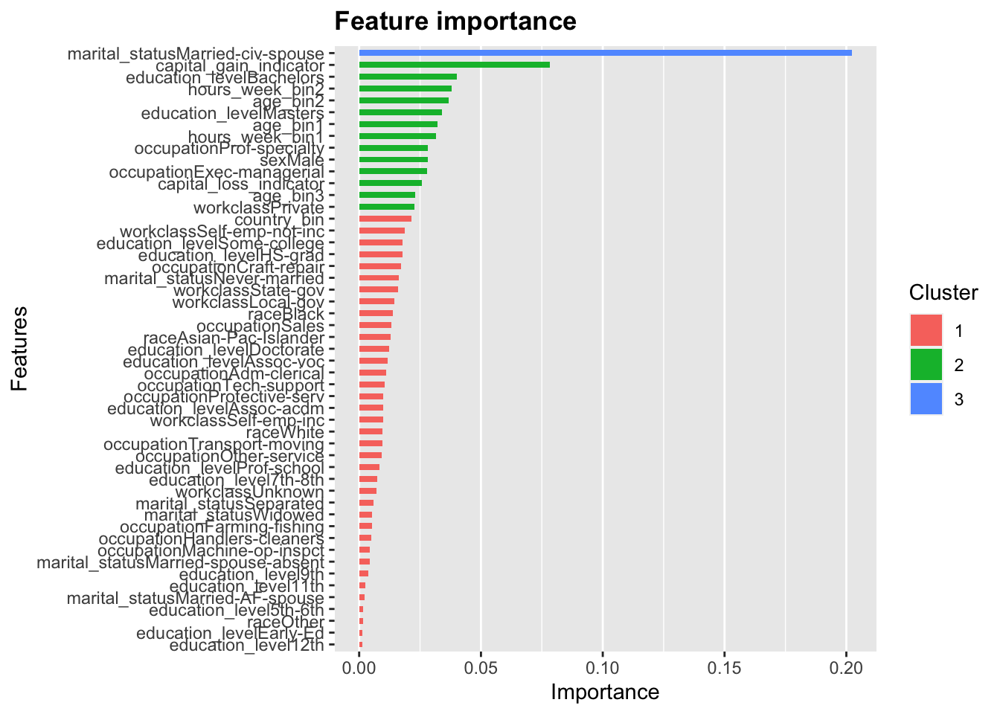
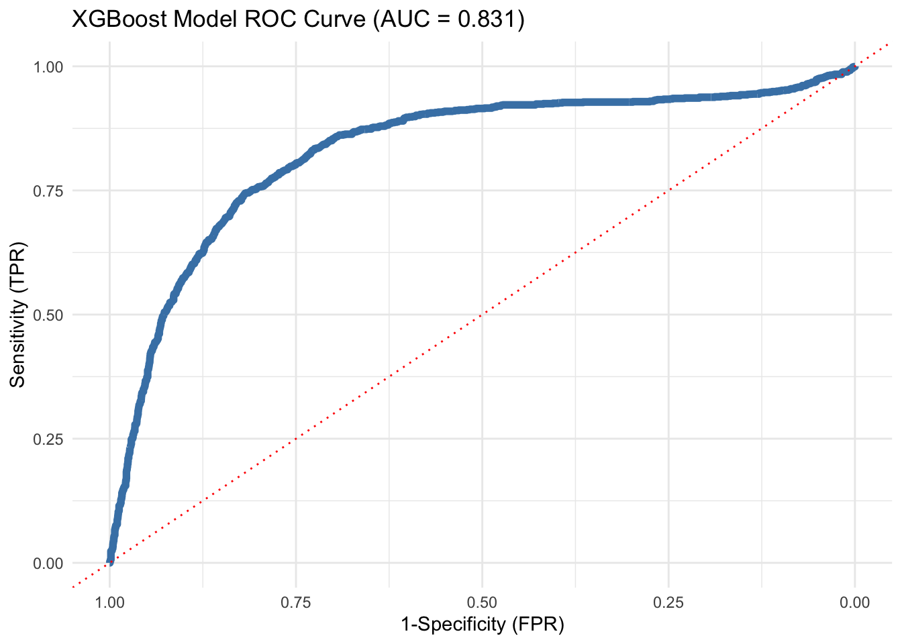
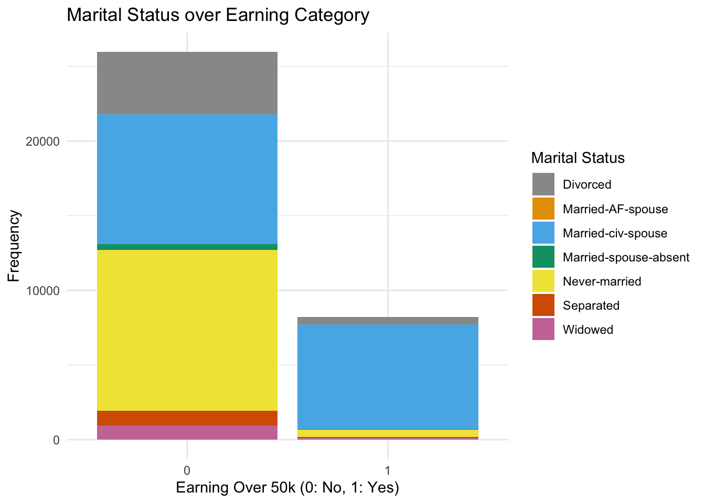
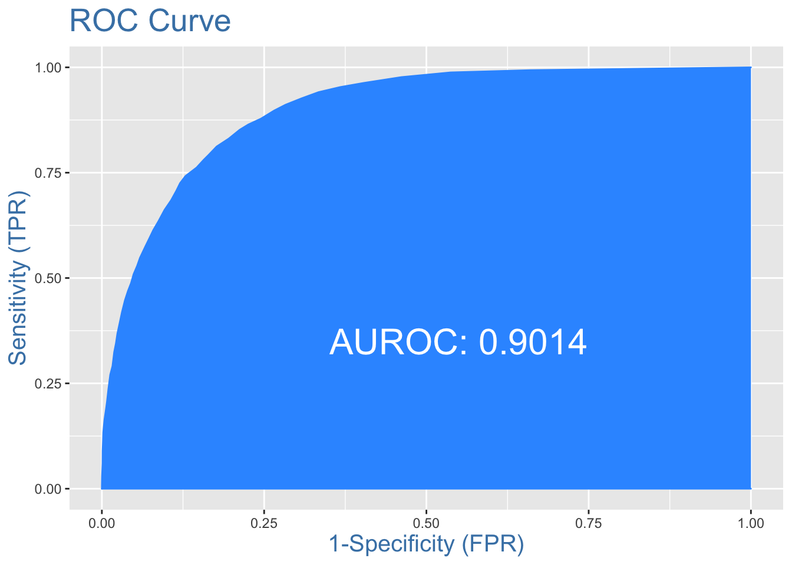

Chapter 17 Variable importance
xgb <- xgboost(data = train_x, label = train_y, subsample = .25, nrounds = 11, eta = 0.9, max_depth = 10)## [1] train-rmse:0.342728
## [2] train-rmse:0.338387
## [3] train-rmse:0.339324
## [4] train-rmse:0.340820
## [5] train-rmse:0.342915
## [6] train-rmse:0.344458
## [7] train-rmse:0.344395
## [8] train-rmse:0.345190
## [9] train-rmse:0.345926
## [10] train-rmse:0.345981
## [11] train-rmse:0.345230xgb.importance(feature_names = colnames(train_x), model = xgb)## Feature Gain Cover Frequency
## 1: marital_statusMarried-civ-spouse 0.202268852 0.0519293656 0.056933842
## 2: capital_gain_indicator 0.078395162 0.0508894162 0.054707379
## 3: education_levelBachelors 0.040241700 0.0366025437 0.028307888
## 4: hours_week_bin2 0.038085858 0.0404228983 0.042938931
## 5: age_bin2 0.036806225 0.0514450648 0.040394402
## 6: education_levelMasters 0.033892330 0.0305801339 0.020674300
## 7: age_bin1 0.032224269 0.0143538963 0.055979644
## 8: hours_week_bin1 0.031400032 0.0157722057 0.072837150
## 9: occupationProf-specialty 0.028181312 0.0217989395 0.022264631
## 10: sexMale 0.028044680 0.0118448292 0.040076336
## 11: occupationExec-managerial 0.027970869 0.0355852959 0.024491094
## 12: capital_loss_indicator 0.025734948 0.0511456199 0.034351145
## 13: age_bin3 0.023024186 0.0257565848 0.030852417
## 14: workclassPrivate 0.022718286 0.0138317595 0.034351145
## 15: country_bin 0.021526396 0.0256787508 0.027035623
## 16: workclassSelf-emp-not-inc 0.018706378 0.0428962915 0.019402036
## 17: education_levelSome-college 0.017925398 0.0193460859 0.023218830
## 18: education_levelHS-grad 0.017679529 0.0143149793 0.021628499
## 19: occupationCraft-repair 0.017331588 0.0262495338 0.018765903
## 20: marital_statusNever-married 0.016379987 0.0044160014 0.026399491
## 21: workclassState-gov 0.016083814 0.0147884698 0.017175573
## 22: workclassLocal-gov 0.014411399 0.0338297056 0.020038168
## 23: raceBlack 0.013964939 0.0055521623 0.020992366
## 24: occupationSales 0.013078476 0.0136252831 0.017811705
## 25: raceAsian-Pac-Islander 0.013009837 0.0163559611 0.016539440
## 26: education_levelDoctorate 0.012210119 0.0565237367 0.013040712
## 27: education_levelAssoc-voc 0.011658715 0.0215492219 0.014312977
## 28: occupationAdm-clerical 0.011005503 0.0064277954 0.011768448
## 29: occupationTech-support 0.010573191 0.0120318471 0.011132316
## 30: occupationProtective-serv 0.009985635 0.0336740375 0.011132316
## 31: education_levelAssoc-acdm 0.009958910 0.0205708911 0.010814249
## 32: workclassSelf-emp-inc 0.009895760 0.0225318768 0.014949109
## 33: raceWhite 0.009522610 0.0057597198 0.011132316
## 34: occupationTransport-moving 0.009472242 0.0037911669 0.009860051
## 35: occupationOther-service 0.009266543 0.0101778832 0.009223919
## 36: education_levelProf-school 0.008341388 0.0238410023 0.010178117
## 37: education_level7th-8th 0.007373421 0.0121756239 0.005725191
## 38: workclassUnknown 0.006960324 0.0086276884 0.008587786
## 39: marital_statusSeparated 0.005908569 0.0043922188 0.009860051
## 40: marital_statusWidowed 0.005388384 0.0041922285 0.009860051
## 41: occupationFarming-fishing 0.005242445 0.0056894529 0.006997455
## 42: occupationHandlers-cleaners 0.004996354 0.0158684172 0.006361323
## 43: occupationMachine-op-inspct 0.004397261 0.0012658844 0.006997455
## 44: marital_statusMarried-spouse-absent 0.004272120 0.0031674135 0.007633588
## 45: education_level9th 0.003855729 0.0042095249 0.004452926
## 46: education_level11th 0.002511712 0.0079639369 0.006361323
## 47: marital_statusMarried-AF-spouse 0.002209353 0.0250690507 0.002862595
## 48: education_level5th-6th 0.001729555 0.0072374857 0.002226463
## 49: raceOther 0.001550917 0.0003394429 0.002862595
## 50: education_levelEarly-Ed 0.001433336 0.0057002632 0.001590331
## 51: education_level12th 0.001193451 0.0082104114 0.001908397
## Feature Gain Cover Frequencyxgb.ggplot.importance(xgb.importance(feature_names = colnames(train_x), model = xgb))
17.0.1 ROC Curve and AUC
# get predictions
# Prepare data for predict function
validation_x <- model.matrix(over_50k ~ ., data = validation)[, 3:53]
validation_y <- as.numeric(as.character(validation$over_50k))
p_hat_xgb <- predict(xgb, newdata = validation_x, type = "response")
# create ROC object
rocobj <- roc(validation$over_50k, p_hat_xgb)## Setting levels: control = 0, case = 1## Setting direction: controls < casesrocobj$auc # to get AUC - 0.816## Area under the curve: 0.831# create ROC plot with minimal theme
ggroc(rocobj, colour = 'steelblue', size = 2) +
ggtitle(paste0('XGBoost Model ROC Curve ', '(AUC = ', round(rocobj$auc, 4), ')')) +
theme_minimal()+ labs(x="1-Specificity (FPR)",y="Sensitivity (TPR)")+geom_abline(intercept = 1.00, size = 0.5, linetype="dotted", color = "red")+ coord_cartesian(xlim=c(1,0)) # Interesting relationship
# Add color blind palette
cbPalette = c("#999999", "#E69F00", "#56B4E9", "#009E73", "#F0E442", "#D55E00", "#CC79A7")
# Plot data
ggplot(data = train) +
geom_bar(mapping = aes(x = over_50k, fill = marital_status, color =)) +
scale_fill_manual(values=cbPalette) +
#scale_fill_discrete(labels = c("Divorced", "Married- Armed Forces", "Married- Civil Spouse", "Married- Spouse Absent", "Never Married", "Separated", "Widowed")) +
labs(title="Marital Status over Earning Category", x ="Earning Over 50k (0: No, 1: Yes)", y = "Frequency", fill = "Marital Status") +
theme_minimal() # Get final AUROC on test data
# Make predictions on validation set
test$p_hat = predict(logit.model, newdata = test, type = 'response')
# Confusion Matrix using Youdens cutoff
test$classification = ifelse(test$p_hat >= 0.2, 1, 0)
confusionMatrix(test$over_50k, factor(test$classification))## Confusion Matrix and Statistics
##
## Reference
## Prediction 0 1
## 0 5683 1845
## 1 273 1968
##
## Accuracy : 0.7832
## 95% CI : (0.7749, 0.7913)
## No Information Rate : 0.6097
## P-Value [Acc > NIR] : < 2.2e-16
##
## Kappa : 0.508
##
## Mcnemar's Test P-Value : < 2.2e-16
##
## Sensitivity : 0.9542
## Specificity : 0.5161
## Pos Pred Value : 0.7549
## Neg Pred Value : 0.8782
## Prevalence : 0.6097
## Detection Rate : 0.5817
## Detection Prevalence : 0.7706
## Balanced Accuracy : 0.7351
##
## 'Positive' Class : 0
## # Evaluate model using AUROC
table(census$over_50k)##
## 0 1
## 37155 11687plotROC(test$over_50k, test$p_hat) # 0.894 AUROC